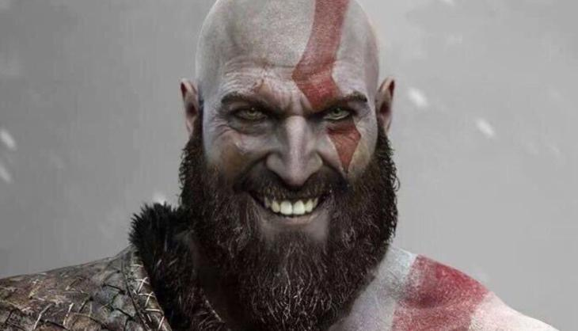

|  |
KratosKratos is happiest being on planet Earth. He loves all of the gods, and he has NOT torn someones head off. He is white because he dosn't go outside, not because he is covered in his dead famiys ashes. He is NOT cursed by the literal god of war. He also did NOT kill his family. |
|
Places visited |
|